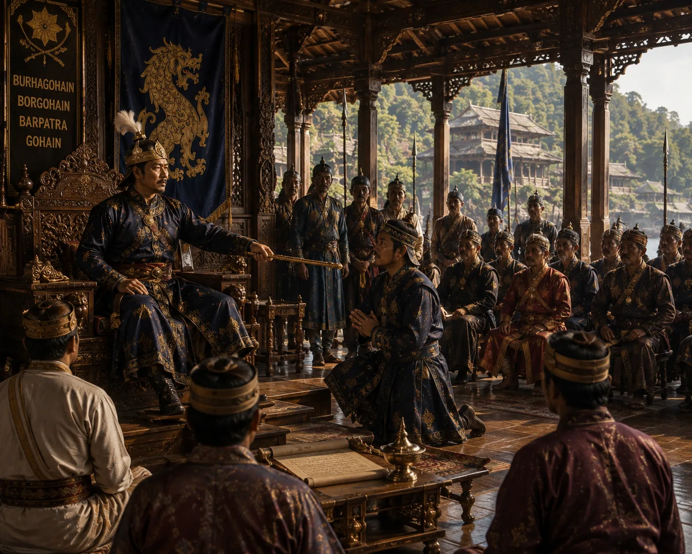

Ahom Commander Kneels in Fealty Before the King
c. 1532 · Against the Mughal Empire

A royal commander kneels before the Ahom throne pledging absolute victory or martyrdom for the homeland.
Sources have not yet been catalogued for this record.
People: Pratap Singha (Susenghphaa)
Open this scene in the interactive archive · Follow this event on MAP